(1.782)(22.9) = (146.9,228.5)
(1.782)(22.9) = (146.9,228.5)| Previous | Table of Contents | Next |
For 90% confidence, the t[0.95;12] value read from Table A.4 in the Appendix is 1.782. The 90% confidence interval for various parameters are
µ = 197.7 (1.782)(22.9) = (146.9,228.5)
α1 = -13.3 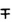 (1.782)(32.4) = (-71.0,44.4)
α2 = -24.5  (1.782)(32.4) = (-82.2,33.2)
(1.782)(32.4) = (-82.2,33.2)
α3 = 37.6 (1.782)(32.4) = (-20.0,95.4)
Notice that the code size on an average processor is significantly different from zero. However, none of the processor effects is significant.Therefore, we cannot say with 90% confidence that the processors have a significant effect on code size.
In order to compare processor R with processor V, we may compute the confidence intervals for α1 - α2, using the formula for  . In this case, h1 = 1, h2 = -1, h3 = 0 (and we verify that 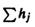 = 0):
. In this case, h1 = 1, h2 = -1, h3 = 0 (and we verify that 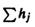 = 0):
Mean value of α1 - α2 = 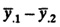 = 174.4 - 163.2 = 11.2
Standard deviation of α1 - α2 = 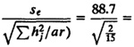 = 56.1
90% Confidence interval for α1 - α2 = 11.2  (1.782)(56.1)
(1.782)(56.1)
= (-88.7,111.1)
The confidence interval for α1 - α2 includes zero, and therefore, we cannot confidently state that one is superior to the other. Similarly,
90% Confidence interval for α1 - α3 = (174.4 - 225.4)  (1.782)(56.1)
(1.782)(56.1)
= (-150.9,48.9)
90% Confidence interval for α1 - α3 = (163.2 - 225.4)  (1.782)(56.1)
(1.782)(56.1)
= (-162.1,37.7)
In both cases, the confidence intervals include zero, and therefore, any one processor is not superior to another. These conclusions based on αi - αj are actually not surprising since the confidence intervals for αj’s have already shown that none of the processors are significantly different from an average processor.
In the analysis presented so far we assumed that we have the same number of observations r at each of a levels of the factor. If the number of observations is different at different levels, the analysis has to be modified only slightly. The steps are essentially the same as discussed so far in this chapter. The modifications are described briefly here.
The model is still
yij = µ + αj + eij
The effects αj are defined so that
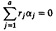
Here, rj is the number of observations at the jth level. The expressions for the effects and their standard deviations are listed in Table 20.6. In the table, N denotes the total number of observations:
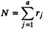
| TABLE 20.6 Parameter Estimation from One-Factor Experiments with Unequal Sample Sizes |
|---|
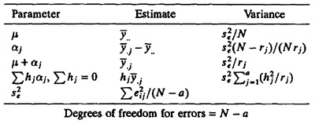
| TABLE 20.7 ANOVA Table for One-Factor Experiments with Unequal Sample Sizes | |||||||
|---|---|---|---|---|---|---|---|
| Component | Sum of Squares | Percentage of Variation | Degrees of Freedom | Mean Square | F- Computed | F- Table | |
| y | 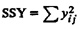 | N | |||||
| 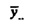 | 
| 1 | |||||
| 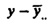 | SST = SSY - SSO | 100 | N - 1 | ||||
| A | 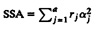 | 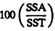 | a - 1 | 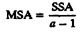 | 
| F[1-α; a-1,N-a] | |
| e | SSE = SST - SSA | 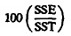 | N - a | 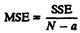 | |||
| 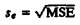 | |||||||
The ANOVA is shown in Table 20.7. It is easy to verify that if all sample sizes are indeed equal, so that rj = r for all j, the analysis does reduce to that for equal sample sizes.
| Previous | Table of Contents | Next |